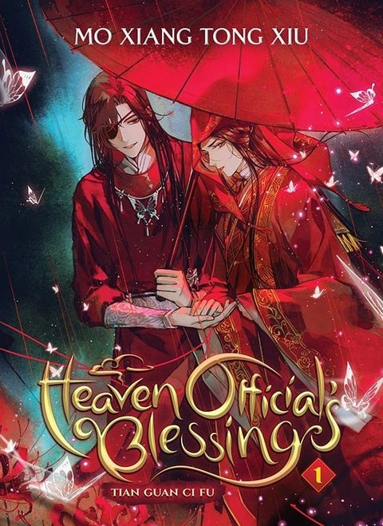

Heaven Official's Blessing
Synopsis
A god who has been banished from heaven twice crosses paths with a powerful and mysterious ghost king.
The Prince Who Caught a Child
Summary of chapter 1
The story begins with a legend about the ancient kingdom of Xianle, a prosperous land whose treasures included a famous crown prince. Beloved by his parents and his people, the prince cares nothing for wealth or royal power. All he wants is to save others.
Two tales are told about him at the age of seventeen. In the first, he plays the role of a warrior god in a grand festival parade. When a child falls from a high city wall, he leaps from the float and catches the child, and his golden mask falls away. The crowd cheers, but the court’s priestly teachers fear it is a terrible omen and ask him to show remorse. He refuses, saying that doing the right thing needs no apology.
The second tale begins with a ghost that has haunted a bridge south of the Yellow River for years. The text pasted here cuts off as that story starts, so the summary stops there too.